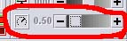
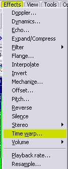

Step 13: Fixing the Sounds
Unlike the textures, this is usually a problem. Not much of a problem, though.
In Step 11, I noticed the Sounds were too high-pitched. Here's how to fix them.
Open Goldwave, and open your sound samples.
In the little Device Controls box, use the playback speed to find a spot where the sounds appear to be the right RPM.

Once you do that, take the playback speed number and go to Effects... Time Warp.

And put in the speed you want.
Then, save the files, mksfx them, and pack the car back up. Use batch files if you want to speed this up.
Perfect! The car sounds real mean if you have a woofer!
Matt has some more tips and tricks of the trade. So here's Matt once again.
The sounds are too lame:
1. Try using Goldwave's "Maximize Volume" to make them sound more agressive.
Don't forget to lower the volume ("Change Volume") when you're done. Note: if
you overdo the maximize volume thing you will crack (destroy) the "sound" and
add way too much treble/noise to it.
2. You can give the carname1.sfx a little darker ring by adding some bass, for
example: 60 Hz = +2, 150 Hz = +4, 400 Hz = +6. Note that this might be too much
for a sound that allready have quite some bass in it. Use Goldwave's
effects/filters/equalizer to do this.
3. Apply more "maximize volume" filter to the carname2.sfx than to the
carname1.sfx. This will make the engine sound more agressive at high rpm's and
with the changes described under (2.) give it more of a round exhaust note at
low rpm's.
Once again, don't overdo the maximize volume thing.
For volume levels I recommend using 70% of the carname2's volume for the
carname1's, for example: carname1.sfx volume = 0.3500 and carname2's volume =
0.5000. This way you will get the feeling the engine is really rushing at high
rpm's perhaps sound a little tormented. You can check the volume level in
effects/volume/maximize.
P.S. Try 0.1300 for the idle sound volume level. Also 1100 rpm is a good level
for idle if you want it as low as possible without "loosing" the carname1.sfx
sound so that there will be a nasty space between them. Even a Viper can have a
idle at 1100 rpm with a hotter camshaft allthough it's normal idle is as low as
702 rpm P.P.S.
Once you are done blowing the subwoofers out from your car's sounds, you can move ONWARD.